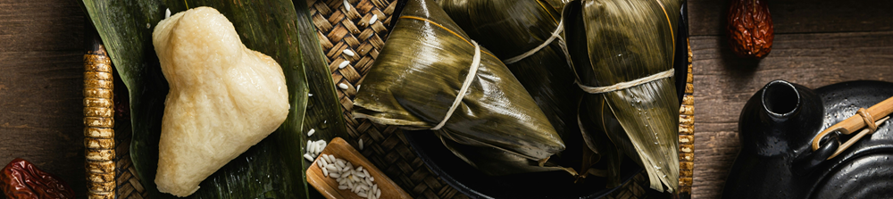

Menguak Keistimewaan Bungkus Makanan dengan Daun: Dari Aroma Khas Hingga Manfaat Ramah Lingkungan
Dipublikasikan pada 8 Agustus 2025

Siapa yang setuju bahwa kuliner Indonesia itu sangat kaya? Saat pulang kampung di akhir Ramadan, kita seringkali disuguhi beragam kuliner tradisional. Jika kita perhatikan, banyak dari kuliner tersebut masih setia menggunakan daun sebagai pembungkusnya.
Penggunaan daun sebagai pembungkus makanan sangatlah luas dan beragam. Contohnya, tempe kerap dibungkus dengan daun pisang di Yogyakarta dan pelepah pisang di Trenggalek. Untuk makanan yang siap santap, daun pisang membungkus lontong, daun kelapa membungkus ketupat, dan daun jati membungkus mie gondor di Bantul. Bahkan, makanan ringan pun menggunakan daun, seperti daun kelapa muda untuk clorot dari Purworejo dan daun pinang untuk pudak dari Gresik.
Daun: Rahasia Cita Rasa dan Aroma Khas Kuliner Tradisional
Aneka kuliner tradisional dengan pembungkus daun ini memiliki cita rasa yang istimewa. Penggunaan daun sebagai pembungkusnya diyakini dapat membuat aroma makanan jadi lebih enak. Konon, tempe yang dibungkus daun rasanya lebih nikmat dibandingkan yang dibungkus plastik. Hal serupa juga berlaku untuk lontong; lontong yang dibungkus daun pisang terasa lebih sedap. Setuju, tidak?
Selain menambah kekayaan cita rasa, pembungkus daun juga memiliki manfaat lain yang tak kalah penting: ia mudah terurai. Jika tidak sengaja terbuang ke tanah atau sungai, pembungkus daun akan terurai secara alami dan tidak menumpuk seperti sampah plastik yang mencemari lingkungan. Inilah yang menjadikan daun sebagai pembungkus makanan ramah lingkungan.
Manfaat Lain Daun: Mengawetkan dan Menjaga Tekstur Makanan
Keunggulan lain dari daun sebagai pembungkus makanan adalah kemampuannya dalam mengawetkan makanan. Ambil contoh pudak, jajanan yang terbuat dari tepung beras dan gula yang dibungkus daun pinang. Daun pinang memiliki kemampuan untuk mengedarkan kelembapan makanan secara merata.
Kelembapan yang merata ini tidak hanya membantu proses pengawetan makanan tetapi juga menjaga tekstur makanan agar tetap optimal. Itulah mengapa penggunaan daun tidak hanya sekadar tradisi, tetapi juga solusi cerdas untuk menjaga kualitas makanan.
Ternyata, penggunaan daun sebagai pembungkus makanan memiliki beragam keistimewaan, ya? Selain menambah cita rasa melalui aromanya, daun juga membantu mengawetkan dan menjaga tekstur makanan. Dengan demikian, daun berfungsi sebagai kemasan yang handal sekaligus ramah lingkungan.
Video tentang penggunaan daun pinang pada pudak, makanan tradisional dari Gresik, dapat ditonton di bawah ini. Semoga bermanfaat!